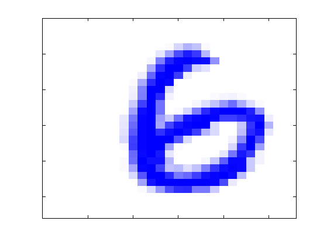
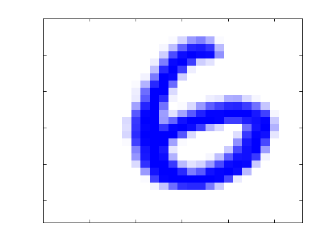
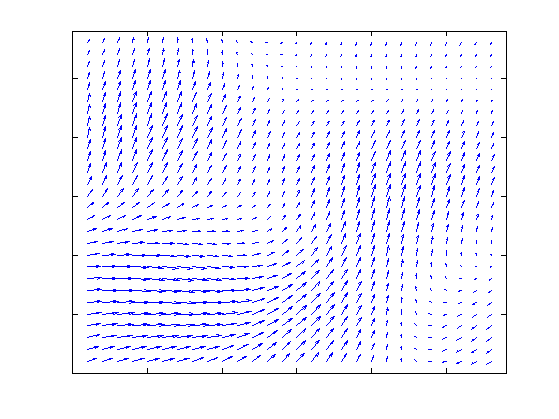
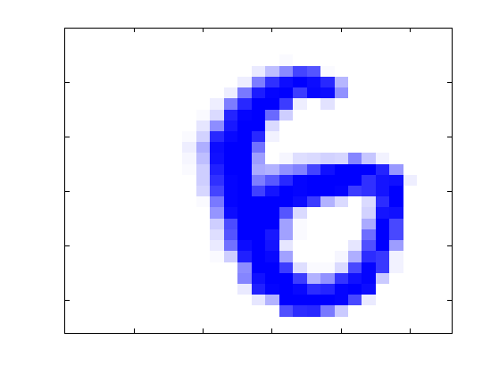
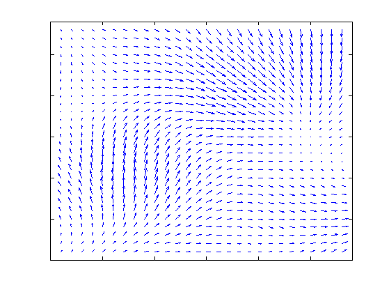
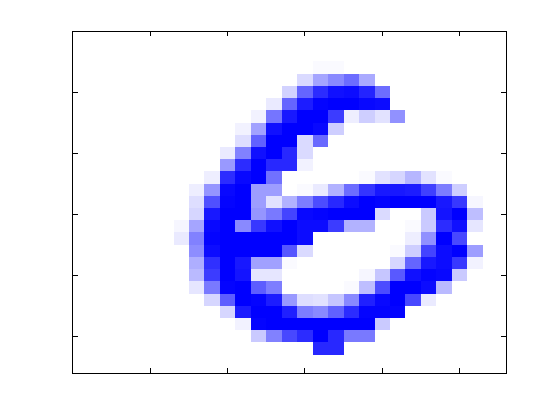
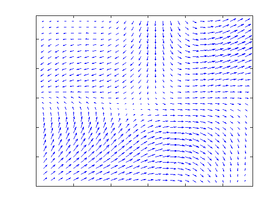

Contents
function elasticDistortionsDemo()
Illustrate elastic deformations
loadData('pmtkImages', 'isMatFile', false)
I = imread('digit6.png');
setSeed(2);
cm = ones(64,3);
cm(:,1:2) = repmat(linspace(1,0,size(cm,1))',1,2);
X = repmat(1:size(I,2),size(I,1),1);
Y = repmat([1:size(I,1)]',1,size(I,2));
sigs = [5 5 5 5];
alphas = [10 10 30 30];
for i=1:numel(sigs)
sig = sigs(i);
alpha = alphas(i);
filterwidth = 101;
[Dx,Dy] = create_distortion_map(I,sig,alpha,filterwidth);
I2 = distort_image(I,Dx,Dy);
figure;
imagesc(I2);colormap(cm)
set(gca,'XTickLabel','')
set(gca,'YTickLabel','')
axis([0,28,0,28]);
printPmtkFigure(sprintf('elasticDistortionDigit%d', i));
figure;
quiver(X,Y,-Dx,Dy);
set(gca,'XTickLabel','')
set(gca,'YTickLabel','')
axis([0,29,0,29]);
printPmtkFigure(sprintf('elasticDistortionQuiver%d', i));
end


     
end
function[Dx,Dy] = create_distortion_map(I,sig,alpha,gausswidth)
[w,h] = size(I);
Dx = zeros(w,h);
Dy = zeros(w,h);
for i=1:w
for j=1:h
Dx(i,j) = 2*rand()-1;
Dy(i,j) = 2*rand()-1;
end
end
h = fspecial('gaussian',gausswidth,sig);
Dx = conv2(Dx,h,'same');
Dy = conv2(Dy,h,'same');
Dx = alpha*(Dx./norm(Dx));
Dy = alpha*(Dy./norm(Dy));
end
function[X2,y2] = create_distorted_dataset(X,y,sig,alpha,n,m)
N = (n+1)*size(X,1);
X2 = zeros(N,size(X,2));
y2 = zeros(N,1);
index = 1;
for i=1:size(X,1)
fprintf('distorting data point: %d\r',i);
for j=1:n
I = reshape(X(i,:),m,m);
[Dx,Dy] = create_distortion_map(I,sig,alpha);
I = distort_image(I,Dx,Dy);
X2(index,:) = I(:)';
y2(index) = y(i);
index = index+1;
end
X2(index,:) = X(i,:);
y2(index) = y(i);
index = index+1;
end
end
function test_distortion(I,sig,alpha,gausswidth)
[Dx,Dy] = create_distortion_map(I,sig,alpha,gausswidth);
I2 = distort_image(I,Dx,Dy);
X = repmat(1:size(I,2),size(I,1),1);
Y = repmat([1:size(I,1)]',1,size(I,2));
figure(1);
subplot(1,3,1); imagesc(I); subplot(1,3,2); imagesc(I2); colormap(gray);
subplot(1,3,3); quiver(X,Y,-Dx,Dy);
end
function[I2] = distort_image(I,Dx,Dy)
[h,w] = size(I);
I2 = zeros(w,h);
for x=1:w
for y=1:h
dx = Dx(y,x);
dy = Dy(y,x);
i1 = imageAt(I,y+floor(dy),x+floor(dx)) + (dx-floor(dx))*(imageAt(I,y+floor(dy),x+ceil(dx))-imageAt(I,y+floor(dy),x+floor(dx)));
i2 = imageAt(I,y+ceil(dy),x+floor(dx)) + (dx-floor(dx))*(imageAt(I,y+ceil(dy),x+ceil(dx))-imageAt(I,y+ceil(dy),x+floor(dx)));
I2(y,x) = i1 + (dy-floor(dy))*(i2-i1);
end
end
end
function i = imageAt(I,y,x)
[w,h] = size(I);
if (x <= 0 || y <= 0)
i = 0;
return;
end
if (x > w || y > h)
i = 0;
return;
end
i = I(y,x);
end